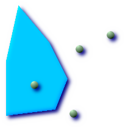

Name
ST_Crosses — Returns TRUE if the supplied geometries have some, but not all,
interior points in common.
Synopsis
boolean ST_Crosses(geometry g1, geometry g2);
Description
ST_Crosses takes two geometry objects and
returns TRUE if their intersection "spatially cross", that is, the
geometries have some, but not all interior points in common. The
intersection of the interiors of the geometries must not be the empty
set and must have a dimensionality less than the the maximum dimension
of the two input geometries. Additionally, the intersection of the two
geometries must not equal either of the source geometries. Otherwise, it
returns FALSE.
In mathematical terms, this is expressed as:
TODO: Insert appropriate MathML markup here or use a gif. Simple HTML markup does not work well in both IE and Firefox.

The DE-9IM Intersection Matrix for the two geometries is:
T*T****** (for Point/Line, Point/Area, and Line/Area situations)
T*****T** (for Line/Point, Area/Point, and Area/Line situations)
0******** (for Line/Line situations)
For any other combination of dimensions this predicate returns false.
The OpenGIS Simple Features Specification defines this predicate only for Point/Line, Point/Area, Line/Line, and Line/Area situations. JTS / GEOS extends the definition to apply to Line/Point, Area/Point and Area/Line situations as well. This makes the relation symmetric.
![[Important]](images/important.png) | |
Do not call with a |
![[Note]](images/note.png) | |
This function call will automatically include a bounding box comparison that will make use of any indexes that are available on the geometries. |
 This method implements the OpenGIS Simple Features
Implementation Specification for SQL 1.1. s2.1.13.3
This method implements the OpenGIS Simple Features
Implementation Specification for SQL 1.1. s2.1.13.3
This method implements the SQL/MM specification. SQL-MM 3: 5.1.29
Examples
The following illustrations all return TRUE.
| 
|

|
|
Consider a situation where a user has two tables: a table of roads and a table of highways.
CREATE TABLE roads ( id serial NOT NULL, the_geom geometry, CONSTRAINT roads_pkey PRIMARY KEY (road_id) );
|
CREATE TABLE highways ( id serial NOT NULL, the_gem geometry, CONSTRAINT roads_pkey PRIMARY KEY (road_id) );
|
To determine a list of roads that cross a highway, use a query similiar to:
SELECT roads.id FROM roads, highways WHERE ST_Crosses(roads.the_geom, highways.the_geom);